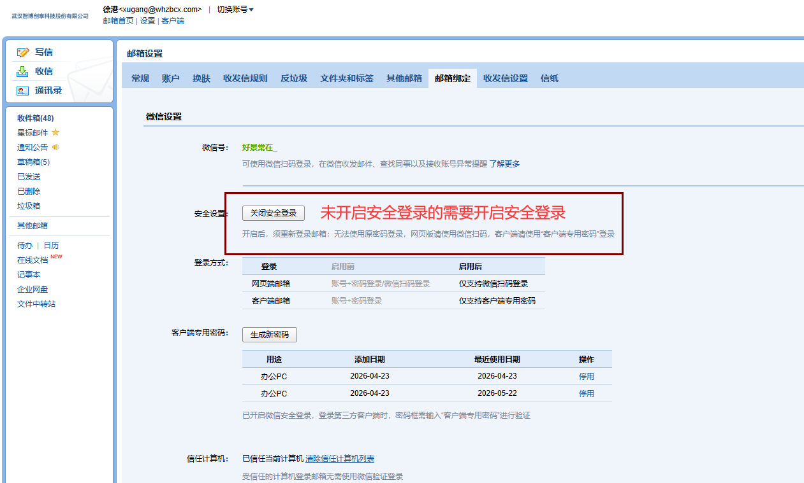
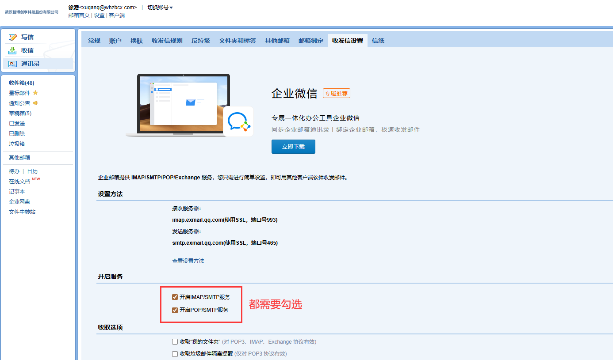
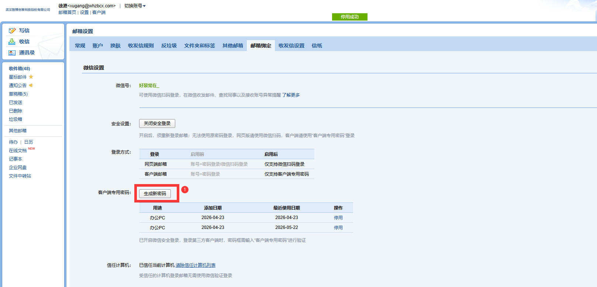
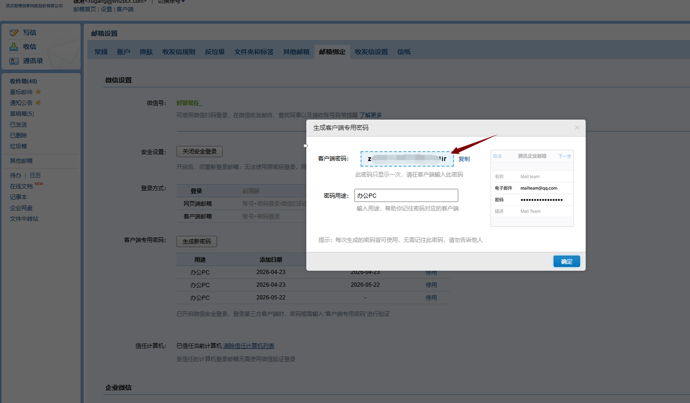
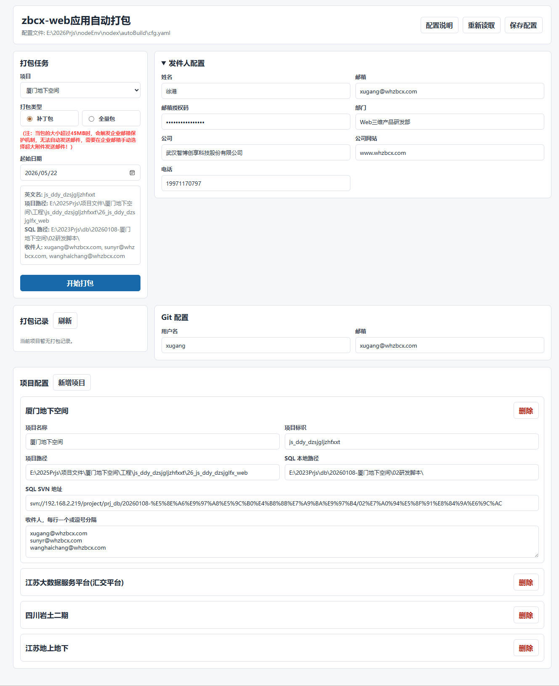

文件位置
配置文件固定放在 exe 同级目录下：
autoBuild/cfg.yaml也可以直接在网页界面里填写，点击“保存配置”后会写入这个文件。
发件人配置
name：发件人姓名。email：企业邮箱账号，同时用于发送打包邮件。psd：企业邮箱授权码或客户端专用密码。dpt：部门名称，会显示在邮件签名中。cpny：公司名称，会显示在邮件签名中。cpnyweb：公司网站。tel：联系电话。
企业邮箱配置


邮箱授权码获取方法


Git 配置
name：自动提交本地改动时使用的 Git 用户名。email：自动提交本地改动时使用的 Git 邮箱。
项目配置
name：项目中文名，界面下拉框显示这个名称，邮件触发时也会用它匹配项目。namee：项目英文标识，保留字段。path：前端项目根目录，目录下需要能执行npm run build。sqlpath：本地 SQL/SVN 工作目录。sqlSvnUrl：SQL 脚本 SVN 地址。emailTarget：收件人邮箱列表，界面里可一行一个，也可用英文逗号分隔。
完整配置参考

运行要求
- 电脑能访问项目 Git 仓库和 SQL SVN 地址。
- 前端项目目录里已安装依赖，或能正常执行
npm install后再打包。 - 本机命令行能执行
git、svn、npm。 - 企业邮箱授权码正确，且 SMTP/IMAP 服务可访问。